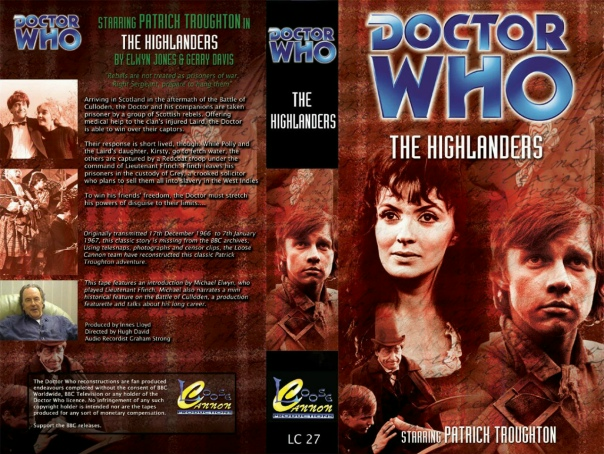
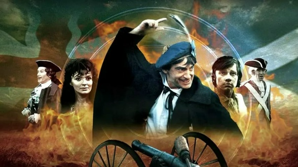
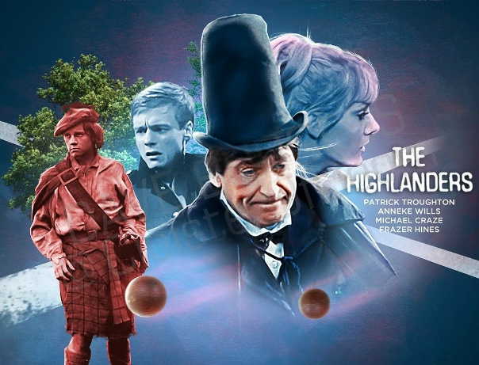

Эра Второго Доктора (4 сезон)
<<< НАЗАД ||| 4. Горцы ||| ДАЛЬШЕ >>>
Субтитры: Русские и Английские |  |
|---|---|
Субтитры: Русские и Английские | |
эп.1 +половина эп.2 (Josh Snares)
17 декабря 1966 - 7 января 1967
4 эпизода по 25 мин.
| Все эпизоды утеряны * Имеется реконструкция |
|---|
 |  |
«Горцы» — историческая драма на фоне рухнувшего восстания: после Каллодена Шотландия дышит тревогой, а Доктор, Бен и Полли оказываются меж молотом английских патрулей и наковальней отчаянной надежды горцев; здесь нет инопланетных угроз — опасность рождается из человеческой жестокости и жажды наживы, а в гуле волынок и шёпоте укрытий рождается новый спутник Доктора, Джейми МакКриммон — юный горец, чья храбрость и простота станут опорой в будущих бурях; тон серии — горький и тёплый одновременно, будто ветер с холмов помнит и битвы, и песни, что звучали до них.
 DVD (фрагменты) 1 ноября 2004 |  LC recon - август 2007 * Версия в нашей группе |
|---|




